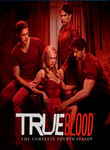

True Blood
Stephen Klancher
...has seen 2
...has seen 0 hours
...has not seen 1.3 hours

Timeline
Most Recent:
The First Taste
...has seen 2
...has seen 0 hours
...has not seen 1.3 hours
Timeline
Most Recent:
The First Taste

Stephen Klancher: October 11, 2009 
Interesting concept. Not having known what this was about, I was really surprised that the premise was that the synthetic blood ended the secrecy usually associated with vampires. I like secrecy as being part of the expected vampire lore, but this certainly allows for a different type of story. I was also surprised that they nonchalantly have the main character as a telepath. That alone can make for a lot of fun story situations. I rented this and watched it with my mom. Every time she asked a question about what they can do, I had to respond that every story changes the rules about vampires.
Stephen Klancher: October 11, 2009
The series seems fun. I probably won't pursue watching any further unless it sounds like there is any super cool story arcs. Or if they start involving some hierarchy of powerful elder vampires or something. I'm sure they'll do something with it, but the intro of the tattooed thug type vampire doesn't seem interesting at first glance.
